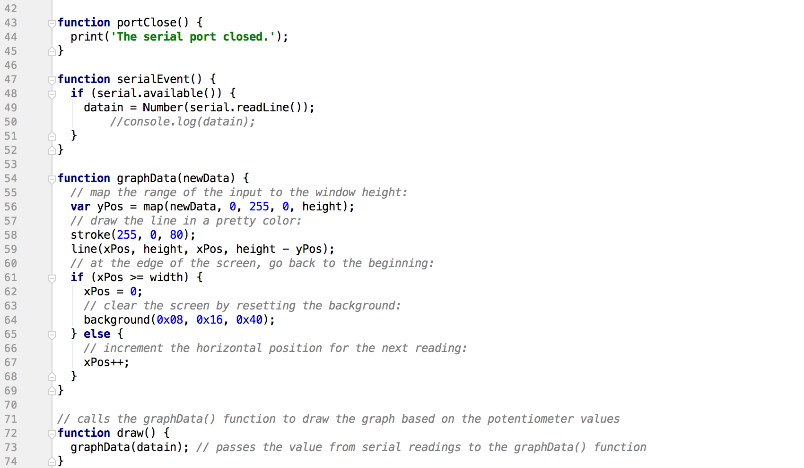

Sunny Cui's Assignment 6!

Here is all the documentation for assignment 6!
Schematic
Circuit
To build the circuit, I used a potentiometer, three wires, an Arduino UNO and a breadboard.
Arduino Codes
From what I measured with the potentiomter, its value ranges from 0 to 1023.
So, I remapped the range from 0 to 255 in order to see the changes on the graph when I turn the knob.
When I open the serial monitor, I get values between 0 and 255 after I remapped the potentiometer range.

Javascript CodesI used the sketch file from the hcde439-example repo, anc change the portname(line 2) to my own port name.
I also edited the draw() function in which I called the graphData() function to draw a graph based on
the potentiometer values from the serial.